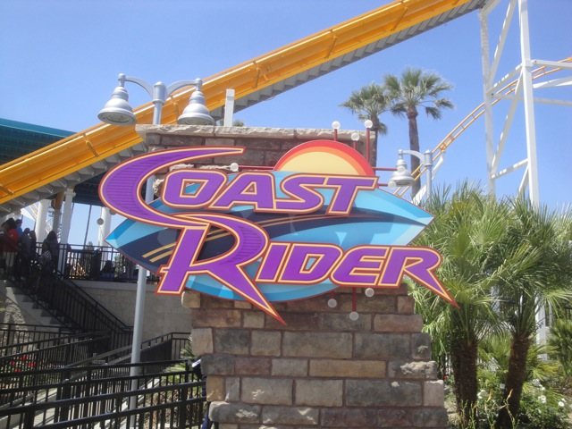

| |
Coast Rider Review

We're here at Knotts Berry Farm where we'll be reveiwing Coast Rider, the parks Wild Mouse. After getting in the seats and pulling down the lap bar, we notice something. Yes, this ride now has shin guards. They were forced to add them thanks to some dumbass kid (I F*CKING HATE PEOPLE!!!). And I know lots of rides have shin guards, such as all the RMCs, and all the Premier launched coasters. And yeah, they're annoying on those rides. But it's SO MUCH WORSE here!!! No really. At least the RMC ones are padded and don't smack your legs at every turn. Plus, they're better than the alternative, which are OTSRs. This is just yet another cover your ass measure the park had to add because people continue to prove to me that they are braindead f*ckwads. GRR!!!! Anyways, you go up the lifthill. Up, up, and up you go. The view is pretty meh as it mostly consists of Buena Park, though if you look to your right, you can see Xcelerator. We reach the top of the lift hill. Turn to the left, and then we see it. The big drop. Yep, this is one of the Wild Mouse models that has the big drop at the beginning. Yeah, Its fun. WEE!!!!!! And then we rise back up to the top. Yeah, that was fun. I wish other Wild Mice had this big first drop. We then hit a set of brakes, and now the Wild Mouse part is about to begin. And yeah. Its kind of slow during these turns. I mean, don't get me wrong, there are still laterals here, they're just not quite as strong as on the other Wild Mouse Coasters. The turns start to get faster and by the last set of turns, we're about on par with the other Wild Mice. After this, we then go through a big sweeping turn and then go through a small dip. Its not too amazing, but it is a fun little dip that makes us squeal with joy. We then hit some brakes, go around another turn and go through another dip. Yeah, you can sort of see a pattern within this type of ride. We then head into some brakes, these slow us down as we meander through a few more turns until we finally head straight into the final brake run. Yeah, its one of the Big Drop Wild Mouse models, which are always fun, but I'm kind of still a little bitter about them taking out Perilous Plunge for a very common type of coaster (May I please just bring up that there are now three Wild Mouse coasters in Southern California). And not to mention, those shin guards really do make the ride SO MUCH WORSE!!! The other Wild Mice are much better than this. But hey, at least it's a credit.
5/10
Location: Knotts Berry Farm
Opened: 2013
Built by: Mack
Last Ridden: February 14, 2018
I have ridden this exact same ride at the following parks.
Kings Dominion
Legoland Billund
Legoland California
Coast Rider Photos




Home
|